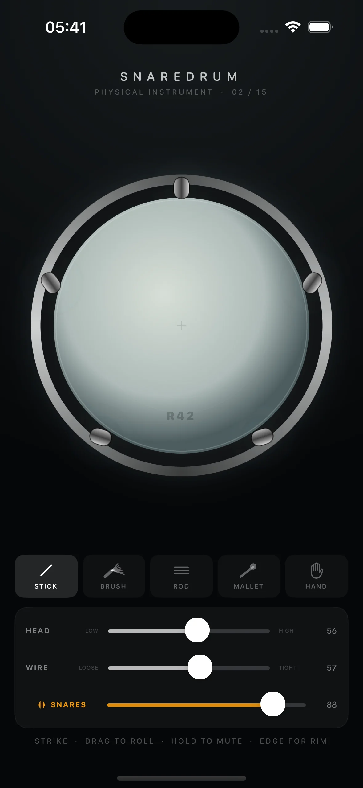
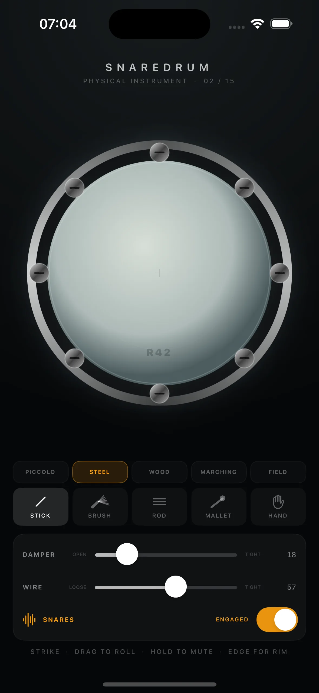

Strike
Play the center for body. Move outward to bring asymmetric modes, wire texture, and upper overtones into the voice.
A physical instrument for iPhone
No samples. Five responsive drums, shaped by touch and synthesized from silence in real time.
Discover the instrument
The instrument
Every strike begins from silence and is formed anew.
Snaredrum models two tensioned heads, a resonant shell, metal hoop, and the restless wire mat beneath. Touch position, force, contact size, and motion shape the sound as you play.
The result is not a sample fired twice. It is a small acoustic system—responsive, imperfect, and entirely yours.
Four natural gestures
Play the center for body. Move outward to bring asymmetric modes, wire texture, and upper overtones into the voice.
Draw a finger or brush across the coated head to make a roll whose texture changes continuously with every point of contact.
Leave your hand on the membrane and its modes are damped beneath your touch, while the rest of the head remains free.
Meet the visible metal hoop for a separate rim voice—bright with a stick, progressively softer with a mallet or hand.
Five physical bodies
Piccolo, steel, wood, marching, and field configurations alter head, shell, hoop, depth, and wire behavior. Nothing is swapped for a recording.

Tuned by hand
Twist eight independent pegs. Change the internal damper, wire tension, snare-band width, or throw the wires off completely. Every control changes the physical model itself.